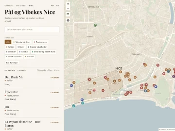
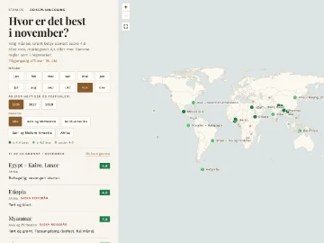

stam.pe
NO
/
EN
Påls apper
Små verktøy for reise og byer, laget for eget bruk.

Nabolag & gåturer
Pål og Vibekes byguider
Nabolag, restauranter og annet verdt en omvei. London, Nice, Oslo og New York.
→

Reisekart & reisekalender
Reiseplanlegging
Beste reisetid per reisemål, måned for måned — rundt 40 steder utenfor Europa.
→
Lagre alt for bruk offline
·
Slett